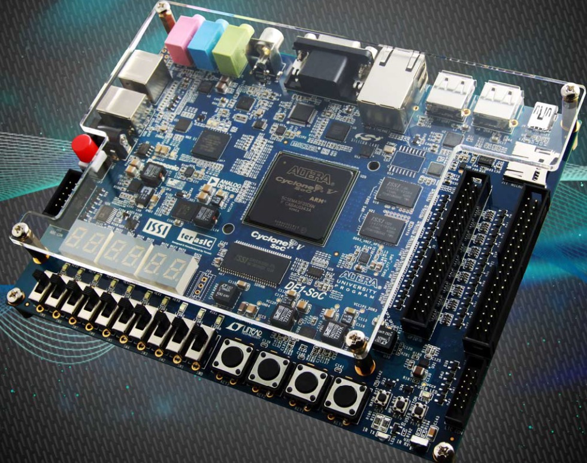
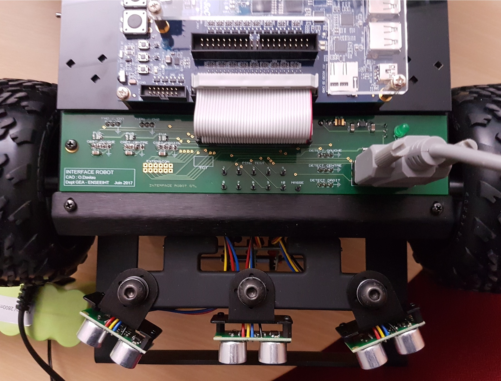
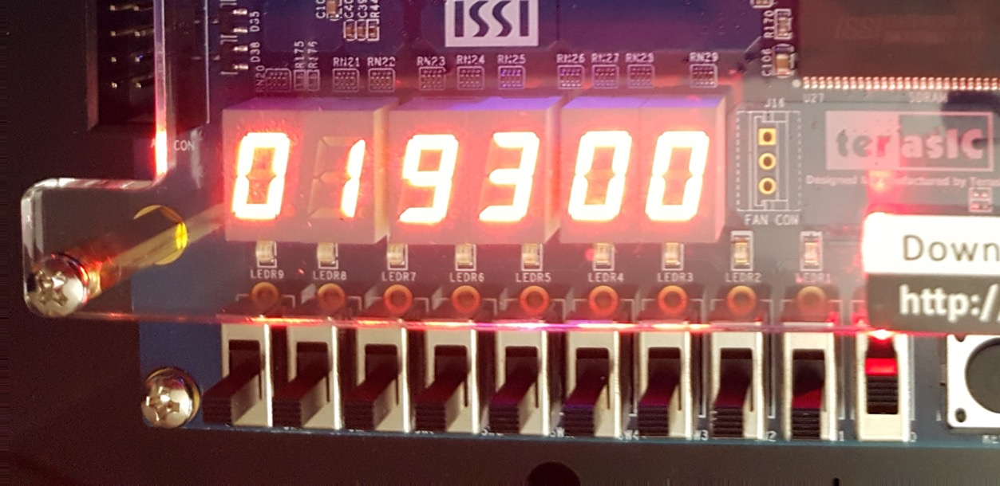

ENSEEIHT · SYSTÈMES EMBARQUÉS & CALCULATEURS · 3EA ENSEEIHT · EMBEDDED SYSTEMS & COMPUTER ARCHITECTURE · 3EA
Robot Mobile Autonome « BoB » Autonomous Mobile Robot "BoB"
Conception conjointe matériel et logiciel : pilotage d'un robot mobile via des pilotes bas niveau en C, décodage combinatoire sous Quartus Prime et interruptions matérielles sur FPGA DE1-SoC. Hardware/software co-design: autonomous mobile robot control through low-level C device drivers, combinational decoding, and event-driven interrupts on an Intel Cyclone V FPGA.
Architecture FPGA & Décodage d'Adresses FPGA Architecture & Address Decoding
Le projet est développé sur carte Terasic DE1-SoC (FPGA Intel Cyclone V) accueillant un processeur softcore 32 bits NIOS II cadencé à 50 MHz interconnecté via le bus Avalon.
The platform runs on a Terasic DE1-SoC board (Intel Cyclone V FPGA) with an instantiated 32-bit NIOS II softcore processor running at 50 MHz on the Avalon bus.
Une plage mémoire de 64 octets (0x00 à 0x3F) a été allouée pour interfacer le robot en 8 zones de 8 octets. Sous Quartus Prime, nous avons synthétisé la logique de sélection (signaux CS0 à CS7) à partir des lignes d'adresses A[5..0] et du signal BUS_ENABLE.
A 64-byte memory window (0x00 to 0x3F) was partitioned into eight 8-byte zones. Under Quartus Prime, we synthesized combinational decoding logic (CS0 to CS7) from address lines A[5..0] validated by BUS_ENABLE.

Pilotes C Bas Niveau & Périphériques Low-Level C Drivers & Peripherals
Sous Eclipse NIOS II, nous avons écrit l'ensemble des pilotes en langage C via des pointeurs volatils (volatile short*) et des masquages binaires :
In Eclipse NIOS II, we authored all peripheral drivers in C using direct memory pointers (volatile short*) and bitwise operations:
- Afficheurs 7 segments : Traduction binaire des chiffres 0–99 et drapeaux d'erreurs.7-segment displays: Decoding 0–99 digits and error flags.
- Joystick de commande : Détection des 5 directions et bouton poussoir par masquage bit à bit.Navigation Joystick: Parsing 5 directional inputs and button via bitwise masks.
- Capteurs optiques au sol : Suivi de ligne par contraste infrarouge blanc/noir.Ground optical sensors: Infrared ground contrast line tracking.
- Télémètres ultrasons : 3 capteurs SRF05 mesurant la distance d'obstacle en temps réel.Ultrasonic rangefinders: 3 SRF05 sensors measuring real-time obstacle distances.

Commande PWM & Arrêt d'Urgence PWM Motor Drives & Emergency Braking
Les 4 roues motrices sont pilotées par des ponts en H 4 quadrants. La modulation de largeur d'impulsion (PWM) est générée par un timer astable de 10 ms (rapport cyclique modulé de 1 ms pour la marche arrière à 2 ms pour la marche avant). The 4 wheels are driven through 4-quadrant H-bridges. Pulse Width Modulation (PWM) is synthesized with a 10 ms base period (1 ms full reverse to 2 ms full forward).
Pour garantir un temps de réponse instantané face aux obstacles, nous avons remplacé la scrutation logicielle par une gestion d'interruptions matérielles préemptives : freinage d'urgence immédiat dès qu'un obstacle est détecté à moins de 20 cm. To ensure immediate response time, polling loops were replaced by prioritized preemptive hardware interrupts: instant emergency stop as soon as an obstacle is detected within 20 cm.
